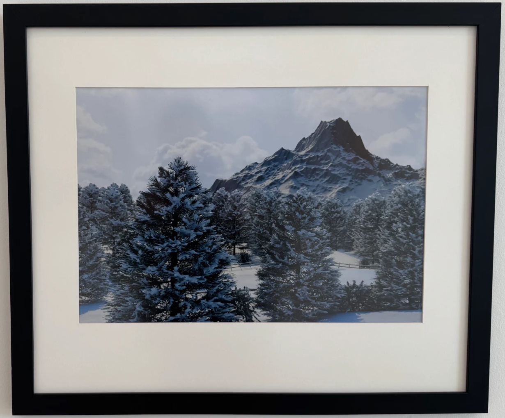
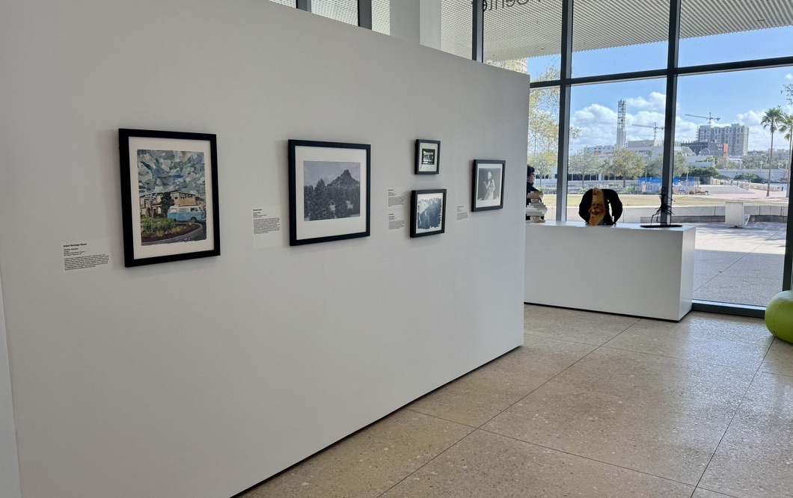

“Frozen Peaks”
Digital artwork, shown at the Tampa Museum of Art.
- MediumDigital art

Artist statement
This piece explores realism through the detailed rendering of snowy trees and a sharp mountain landscape. I was inspired by online digital renders that blur the line between computer generated imagery and real photography. Using Blender, I originally planned this scene as a backdrop for a realistic railcar model, but as the environment developed, the landscape itself became strong enough to stand alone. I chose to keep the focus on the natural setting to highlight the textures, lighting, and atmosphere of that cold winter. When viewing this artwork, I want the audience to feel as if they’re looking at a genuine photograph—one that brings back memories of cold, snowy winters and the quiet beauty found in nature.
On display
Hanging in the gallery at the Tampa Museum of Art.
